| 日付 | 2013年3月16日（土） |
|---|---|
| 山域 | 丹沢 |
| メンバー | 家族（長女・2歳） |
| 山行形態 | 子連れ日帰り |
| アクセス | 車 |
| ルート (Map) | 道の駅道志 (9:46) - (10:26) 林道出合 - (11:11) 鳥ノ胸山 (11:57) - (12:40) 雑木の頭 - (13:29) 道志の森キャンプ場 (13:44) - (14:02) 道の駅道志 |
子供を連れて1か月ぶりに山に行くことにする。
3週間前にも山に行こうとしたのだが
子供が車で吐いてしまい、引き返すことになってしまった。
今回はその時以来の鳥ノ胸山の挑戦だ。
道の駅道志の駐車場に車を停める。標高700m。
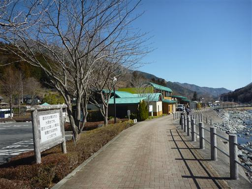
道志川を挟んで反対側には目指す鳥ノ胸山が見えている。
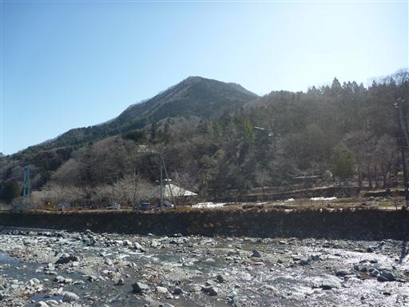
車道を少し歩くと鳥ノ胸山に導く標識が立っている。
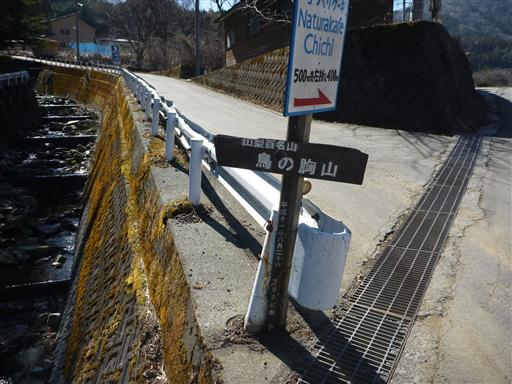
長い長い林道を歩いていく。林道と言っても途中から車は走れないような道になる。
登山口までは登山道を歩くルートと林道を歩くルートとの2ルートがあり、
登山道を歩くルートを選んだつもりだったのだが、道を間違えて林道ルートに入ってしまったようだ。
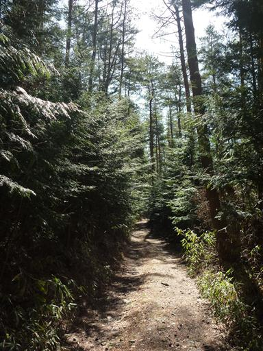
長い林道を40分ほど歩いて、ようやく登山道入口に到着する。
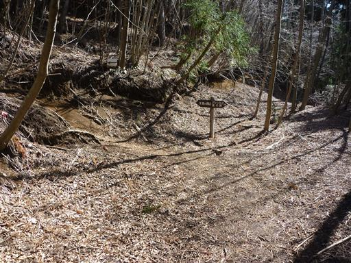
登山道は多くが植林地帯で面白みに欠ける。
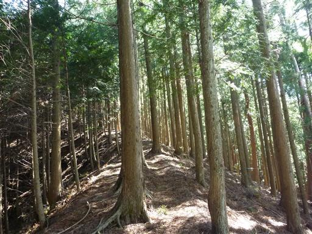
前方が少し霞んでいる。おそらく大量の花粉が飛んでいるのだろう。
今日は花粉症予防のためマスクをつけてきているので、少々息苦しい。
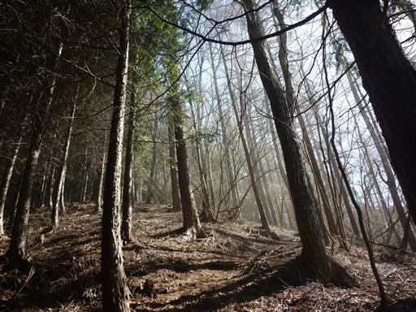
しばらく登るとようやく植林地帯から解放される。
落葉樹林帯は明るくて気持ちが良い。
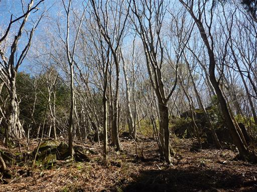
登山道はずっと急斜面が続く。一気に登れるため効率的だが、
荷物が重いため結構つらい。
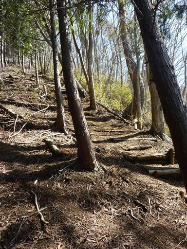
急坂を登りきると小ピークに到達する。
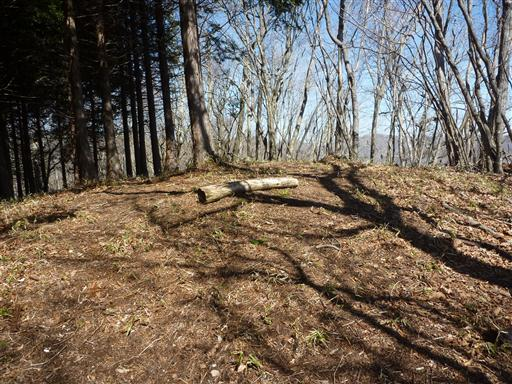
ここから先は歩きやすい登山道になる。
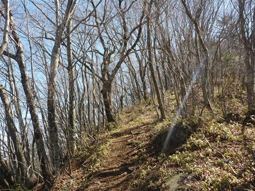
僅かの登りで鳥ノ胸山山頂に到着する。標高1208m。
ここまで誰とも出会わなかった。
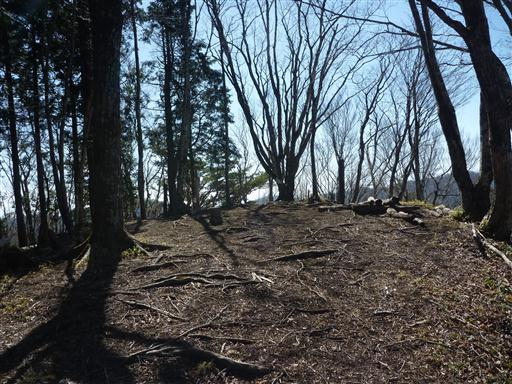
山頂は西の方角のみ木が切られていて真白な富士山が良く見えている。
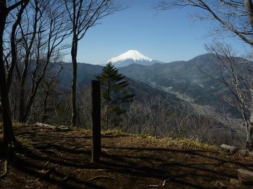
眼下を見るとあちらこちらで花粉が飛んでいるのを確認できる。
この辺りは植林が多いのか、花粉の量がかなり多い。
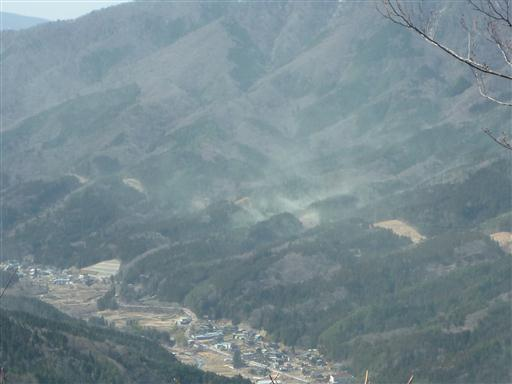
一際目立つ大きな山は道志山塊の盟主・御正体山だ。
比較的家から近い山なのだが、この山にはいまだに登る機会を得ていない。
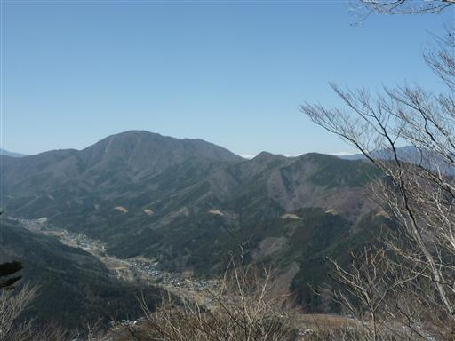
御正体山の奥の方には、遠く南アルプスの山々が見えている。
山頂で昼食をとっていると2パーティがやってきて賑やかになる。
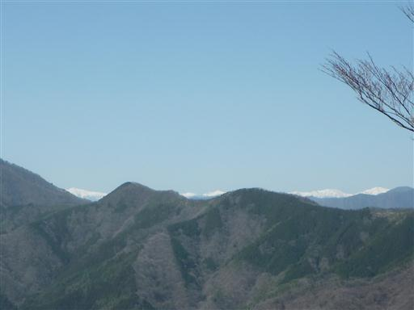
下山開始。子供は歩きそうだったので、キャリアに乗せず手をつないで歩きだす。
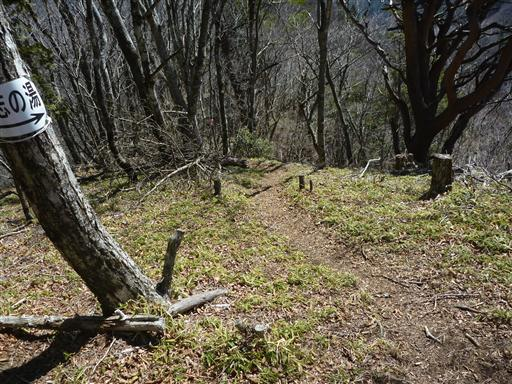
最初は機嫌よく歩いていたが、急斜面の下りが連続したところでギブアップ。
途中から抱っこして下り、傾斜が緩くなったところでキャリアに乗せる。
15分くらいは頑張って歩いてくれた。今後少しずつ長い距離を歩けるようになっていくだろう。
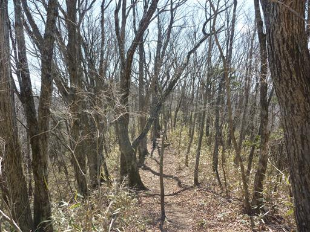
雑木の頭と呼ばれる小ピークに到着。背後に鳥ノ胸山が見えている。
ここまでなかなか雰囲気の良い稜線だった。名残惜しいがここから下山道に入っていく。
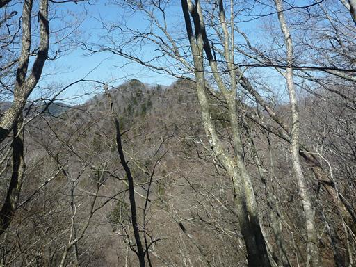
下山道も植林地帯が多く、あまり面白味がない。
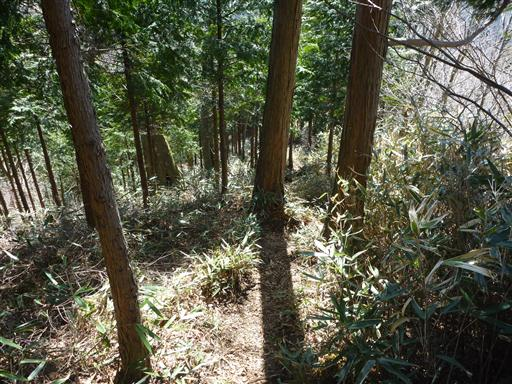
道志の森キャンプ場に下山する。
この季節はまだキャンプ場はオープンしていないように見えるが、
キャンプをしている人がちらほら見られる。

三ヶ瀬川の河原に寄って少し遊んでいくことにする。
子供は河原の石を拾っては川に投げ入れている。
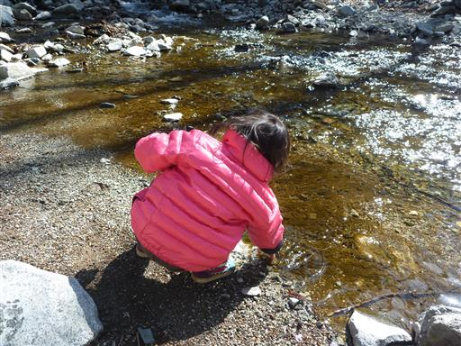
あとは道の駅道志まで車道を歩くのみだ。
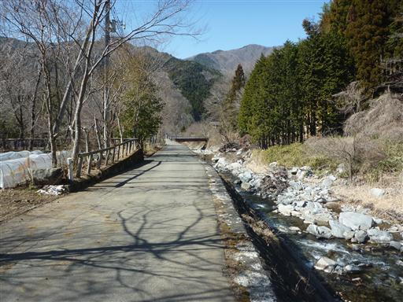
登りに使った道と合流する。
川の向こう側の道が今回登りに使った林道ルート、川の手前が登りたかった登山道ルートのようだ。
手前の道には鳥ノ胸山を示す標識がなく、これでは分かる訳がない。
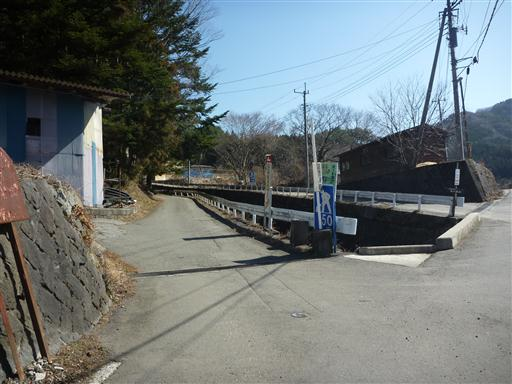
無事、道の駅道志の駐車場に戻ってくる。非常に賑わっている道の駅だ。
2度目の子供との二人山行だったが、大したトラブルもなく歩くことができた。
これなら、もう少し歩く距離の長い山にも行けそうだ。
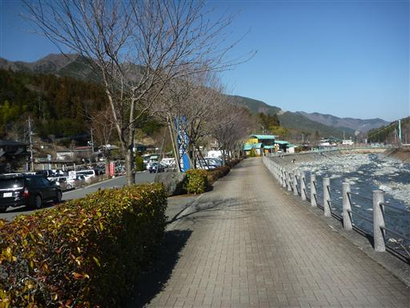